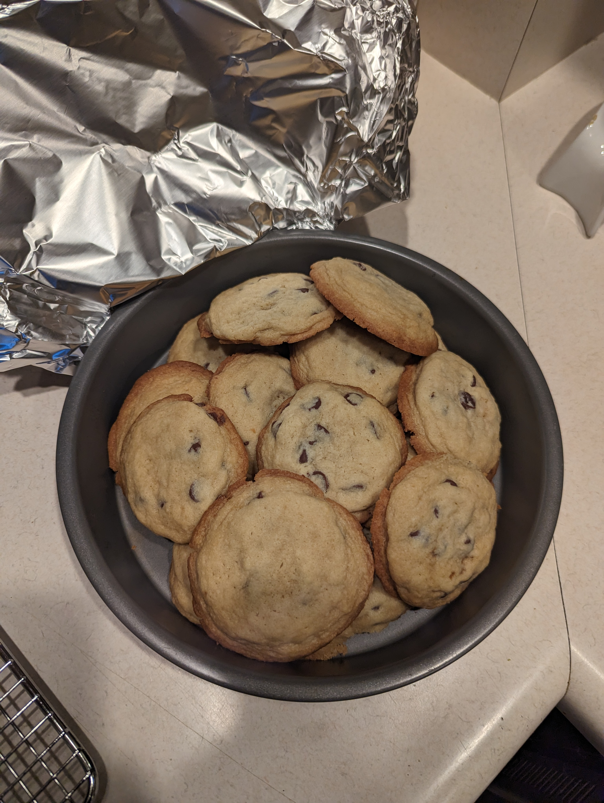

html lang="en"
Willford Family Chocolate Chip Cookies
Willford Family Chocolate Chip Cookies

Description
Makes about 3 dozen cookies.
- 2 1/4 cups all-purpose flour
- 1/2 tsp. baking soda
- 2 sticks unsalted butter, softened (salted and it is fine if you don't have unsalted)
- 1/2 cup granulated sugar
- 1 cup packed brown sugar
- 1 tsp. salt
- 2 tsp. pure vanilla extract
- 2 large eggs
- 2 cups semi-sweet chocolate chips (I always use Ghirardelli 60% Cacao, which makes them extra delicious)
- Preheat oven to 350.
- In a small bowl, whisk together the flour and baking soda; set aside.
- In the bowl of an electric mixer with the paddle attachment, combine the butter and both sugars; mix on medium speed until pale and fluffy.
- Reduce speed to low; add the salt, vanilla and eggs. Mix well, about 1 minute.
- Add flour mixture; mix until just combined.
- Stir in the chocolate chips.
- Drop heaping tablespoon-sized balls of dough about 2 inches apart on baking sheets lined with parchment paper (if you have it, or use nonstick spray).
- Bake until cookies are golden around the edges but still soft in the centers, 8 to 10 minutes.
- Let cool on baking sheet 1 to 2 minutes, then take them off and let them cool completely.